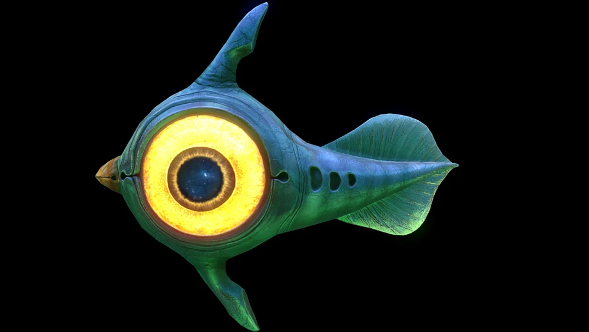

Cooked Peeper
The Peeper is a little creature with a blue body that becomes greenish at the tail. It has a golden beak-like mouth on the front of its head and a pair of huge eyes on both sides. The eyes have brown irises and black pupils with vivid bioluminescent yellow sclerae. The fact that the Peeper has eyelids is also significant. A tiny caudal fin is present. Three openings, resembling gills, run down either side of the body. It possesses two tube-like organs that stretch from its body to the top and bottom of its head, resembling backward-facing jets, which drive it forward while creating water trails.
SN : ✓
BZ: